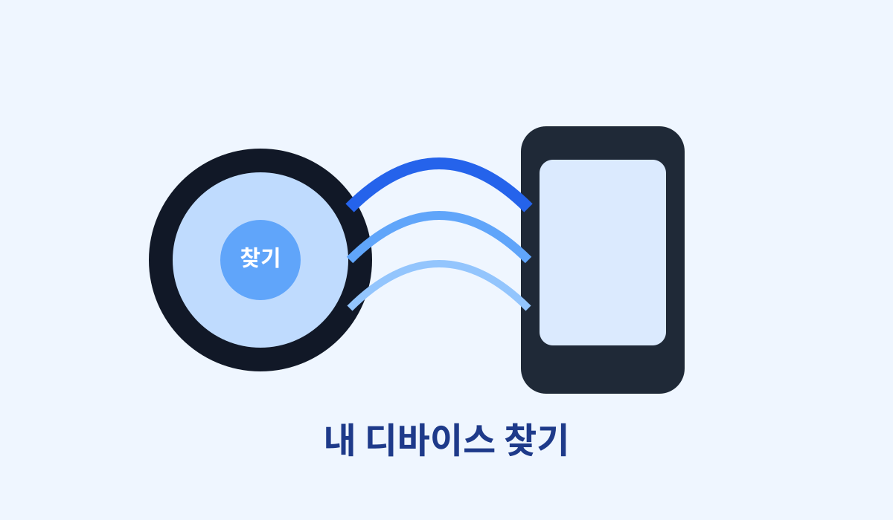
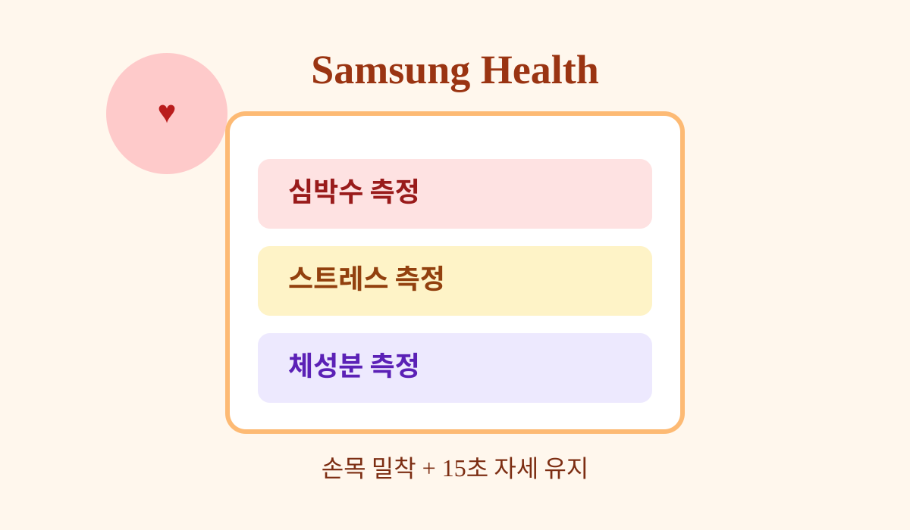

빠른 시작 (처음 5분)
- 워치를 손목에 착용하고 전원을 켜세요.
- 휴대폰과 블루투스 연결이 되었는지 확인하세요.
- 아래에서 배우고 싶은 기능을 선택하세요.
1) 기본 조작

목표: 화면 켜기, 스와이프, 버튼 사용 익히기
- 워치 화면을 한번 눌러 켭니다.
- 왼쪽/오른쪽으로 밀어 위젯을 넘겨봅니다.
- 위에서 아래로 밀어 빠른 설정을 엽니다.
- 아래에서 위로 밀어 앱 목록을 엽니다.
- 옆 버튼을 눌러 홈으로 돌아갑니다.
2) 전화 받기

목표: 전화 오면 워치에서 바로 받기
- 전화가 오면 화면의 초록 버튼을 누릅니다.
- 말할 때는 워치를 입 가까이 가져갑니다.
- 통화를 끝낼 때는 빨간 버튼을 누릅니다.
- 소리가 크면 측면 버튼으로 볼륨을 조절합니다.
3) 내 핸드폰 찾기

목표: 휴대폰이 안 보일 때 벨 울리기
- 워치 화면을 위에서 아래로 내려 빠른 설정을 엽니다.
- "휴대폰 찾기" 아이콘을 누릅니다.
- 휴대폰에서 소리가 나면 소리를 따라 찾습니다.
- 찾았으면 휴대폰 화면에서 소리 끄기를 누릅니다.
4) 건강 측정 (심박/스트레스/체성분)

목표: 건강 앱에서 기본 측정 3가지를 실행하기
- 앱 목록에서 Samsung Health를 엽니다.
- 심박수 측정을 누르고 30초간 가만히 있습니다.
- 스트레스 측정을 누르고 편하게 호흡합니다.
- 체성분 측정은 안내 자세를 따라 15초 유지합니다.
주의: 측정 전 손목을 건조하게 하고, 밴드를 너무 느슨하지 않게 착용하세요.
문제 생기면
- 워치가 반응이 느려요: 전원 버튼 길게 눌러 재시작
- 전화 수신이 안 와요: 휴대폰 블루투스 연결 상태 확인
- 측정이 자꾸 실패해요: 워치를 손목 위쪽에 밀착 착용